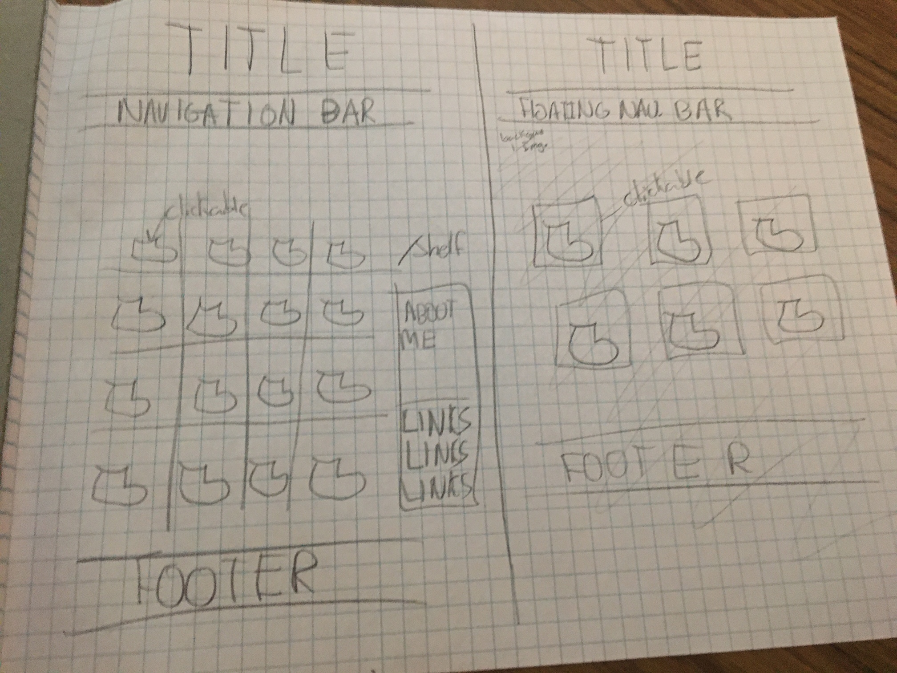
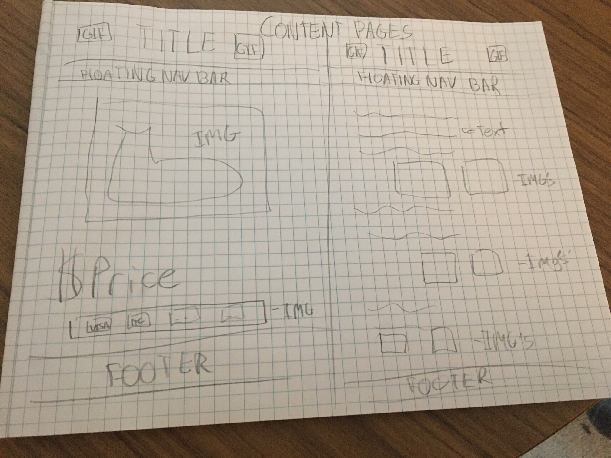

During this project I used online sources to help me when I was stuck. I would read how to make something for example a grid and I would add into my code what I needed. I also had the help of my brother’s girlfriend who guided me in the right directions for certain things such as code layout and text layout. When I originally planned my project, I wanted to have a blank background and many clickable shoes on a rack (as shown in the image below on the left) and each shoe would be clickable.
 I also wanted some sort of side bar with text and/or images. I also originally wanted a darker colour scheme so that certain images popped. But I changed it to lighter colours because it is easier to read and more legible. In order to complete the project, I started off by planning what I wanted to do and had different ideas and brainstormed what I wanted my cite to look like. I also looked at many other online sneaker stores. To see inspiration and other things that I liked such as colours and layout. (as seen on this link) Google Doc
After looking for inspiration I started creating my main page. I drew out what I wanted it to look like (image above on the right) and based it off my design. I than created my content based off a slightly similar layout and design as my main page. Than I tested my website to see if everything works. You should use my website because it is very interactive. It has the latest and most trending shoes to this date and can teach you about a culture that you may have not known about. I even learned some JavaScript to create a sticky Navigation bar that floats over the page so you can access the other pages with ease. I also linked the individual shoes so that you can look at the shoes more in depth and also go to footlocker and purchase them.
Links I used
- https://www.complex.com/ca
- https://www.w3schools.com/howto/howto_css_full_page.asp
- https://www.w3schools.com/howto/howto_js_navbar_sticky.asp
- https://www.w3schools.com/howto/tryit.asp?filename=tryhow_js_navbar_sticky
- https://www.w3schools.com/howto/tryit.asp?filename=tryhow_js_navbar_sticky
- https://www.w3schools.com/css/css_rwd_grid.asp
- https://www.tutorialbrain.com/css_tutorial/css_font_family_list/
- https://www.w3schools.com/howto/howto_css_round_buttons.asp
- https://css-tricks.com/look-ma-no-media-queries-responsive-layouts-using-css-grid/